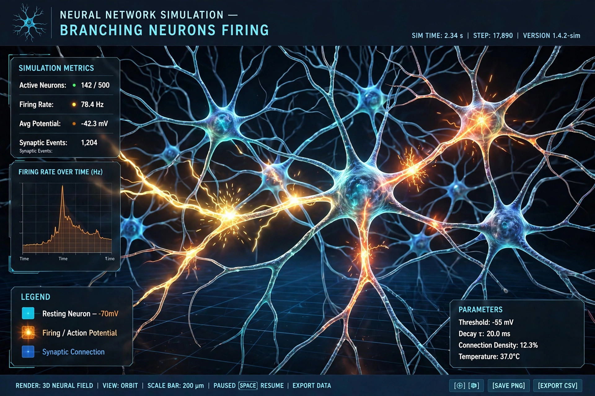

| Field | Neuroscience |
|---|---|
| Methods | Mathematical modelling, simulation, data analysis |
Computational neuroscience (also known as theoretical neuroscience or mathematical neuroscience) is a branch of neuroscience that employs mathematical models, theoretical analysis and abstractions of the brain to understand the principles governing the development, structure, information-processing, physiology and cognitive abilities of the nervous system.
The field has roots in the 1940s and 1950s: the McCulloch–Pitts model of the artificial neuron (1943) and, most influentially, the Hodgkin–Huxley model of the action potential (1952), which described mathematically how ionic currents generate nerve impulses in the squid giant axon and remains a landmark of mathematical biology. Later milestones included David Marr's work on the cerebellum, hippocampus and vision, the development of neural network theory, and the growth of modelling tools such as compartmental simulators (e.g. NEURON and GENESIS). The term "computational neuroscience" itself came into use in the 1980s, helped by workshops and meetings organised by Eric L. Schwartz and others.
Computational neuroscience is distinguished from computational psychology and machine learning by its emphasis on biologically realistic description: its models are constrained by anatomy and physiology and aim to explain how the brain itself computes, rather than merely to replicate intelligent behaviour in artificial systems — although the fields interact closely, for example through deep learning models of the visual system.